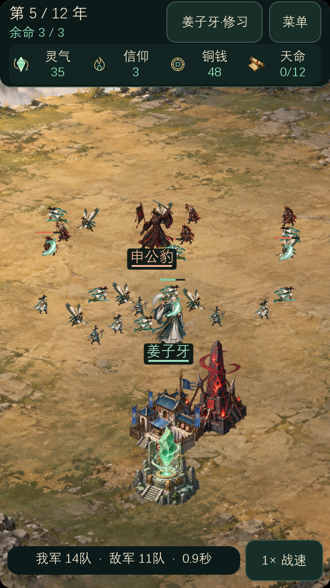
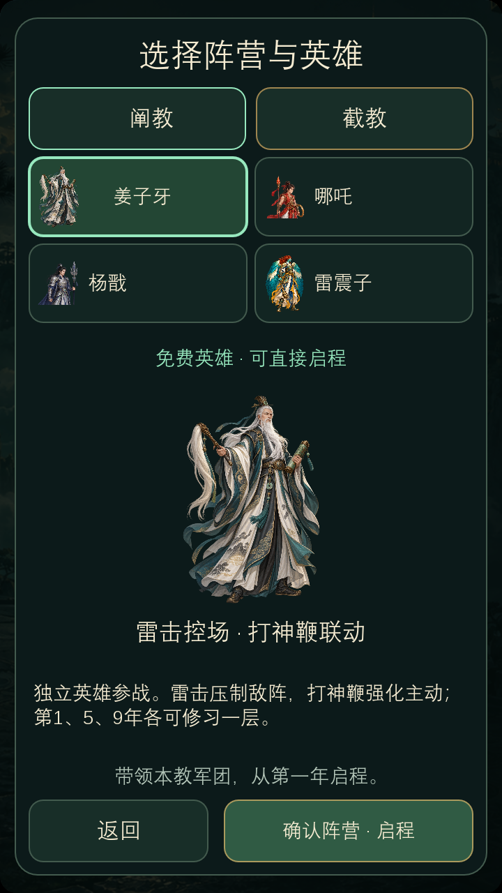
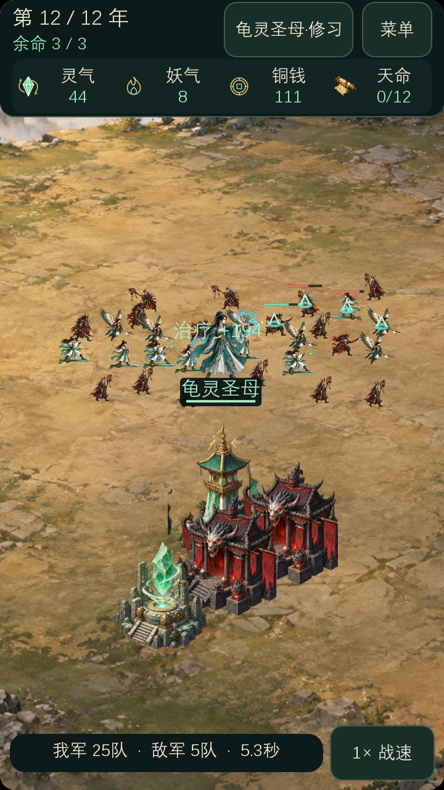

把准备压缩到每年一张牌
收入、战力和格位争用同一次出牌。早建资源建筑能多收几年收益，临战增援能马上补兵，升级则能在有限地块里继续成长。
TAPTAP MAKER / 个人 AI 游戏实践
卡牌构筑 / 城池布阵 / 自动战斗
三张手牌，一年一战。选择阐教或截教英雄，用有限的资源和地块建城、增援或施法，在十二年征伐中逐步成形自己的军团。
Windows 原型 · TapTap 手机版 0.36 已发布
GAMEPLAY / 核心体验
每年从三张手牌里使用或弃置一张。选牌后，点亮起的地块或建筑即可建造、升级、增援或布置法术，神器单独确认。队伍随后自动交战，战后三选一为下一年的阵容补上关键一环。
TAPTAP GALLERY / 游戏展示图
八张截图来自 0.36 发布素材，为 Windows 引擎中的 720×1280 竖屏运行画面。
点击任意图片可查看大图。 多张画面可左右滑动，也可聚焦图库后使用方向键浏览。








DESIGN / 规则与取舍
收入、战力和格位争用同一次出牌。早建资源建筑能多收几年收益，临战增援能马上补兵，升级则能在有限地块里继续成长。
准备时高亮可放位置，点建筑主体也能操作。开战时淡出手牌和网格，镜头展开军阵。玩家能先看清落点，再看清布阵怎样影响交锋。
雷震子靠连锁雷击压制多目标，多宝道人随已激活的神器种类增伤，龟灵圣母可以减速和治疗。三层修习给同一位英雄不同的成长路线。
把手牌、取消和弃牌放到底部，把长说明收进按需打开的详情。选角按阵营分组，战利品纵向三选一，修习和培养的确认按钮保留在近手位置。
MY PRACTICE / 项目推进
我确定玩法节奏和界面方向，提出每回合的决策约束、建造落点、战斗界面和竖屏适配要求，并根据运行画面推进迭代。借助 AI 实现并回归验证 Windows 原型与 TapTap 制造手机版，验证范围覆盖完整征伐、触控流程、存档恢复及英雄培养。